From interviews to a PivotTable: a practice activity
You will code six short interviews in Taguette, export them, split the data in Excel, and build PivotTables that show what the participants said. Every step is numbered, with pictures of the real screens.
You need a Windows computer with Taguette 1.4.1 installed, and Microsoft Excel. Work with a partner if you can: one uses the mouse, the other reads the steps aloud. Click a step number to tick that step, and tick I finished at the end of each part. Your progress is saved in this browser, so you can close the page and come back.
Part 1 about 10 minutes
Read the study first
Know what the interviews are about before you open any program. The software is easier when the content is familiar.
Balancing Work and Graduate Studies: Experiences of Teacher-Graduate Students. Six public school teachers who are also taking graduate studies were interviewed. Three are taking a Master’s degree and three a Doctoral degree. All of them are hypothetical: this is practice data written for this activity.
The participants
| Code | Program | Sex | Age | Position | Years teaching |
|---|---|---|---|---|---|
| S01 | Master’s | Female | 26 | Grade 4 teacher | 3 |
| S02 | Doctoral | Male | 45 | Grade 10 teacher | 15 |
| S03 | Master’s | Male | 29 | Grade 9 teacher | 5 |
| S04 | Doctoral | Female | 48 | Master Teacher | 18 |
| S05 | Master’s | Female | 24 | Kindergarten teacher | 2 |
| S06 | Doctoral | Male | 51 | Head Teacher | 22 |
The four interview questions
- What is your biggest challenge in balancing your teaching job and your graduate studies?
- Who or what helps you the most?
- How do you cope when the workload becomes too heavy?
- What would make it easier for teacher-graduate students like you?
The transcripts
Tap a name to read it. You will download these same files in Part 2.
S01_Masters_Female
Q1. What is your biggest challenge in balancing your teaching job and your graduate studies?
S01: Time is my biggest problem. I teach the whole day, then I travel to the university for my evening classes, and I still have lesson plans to finish. Sometimes I am so tired that I fall asleep while reading my assignments. Paying for my tuition is also hard because I am still paying my first loan.
Q2. Who or what helps you the most?
S01: My mother helps me a lot. She cooks for me and reminds me to eat. My classmates also share their notes when I miss a class.
Q3. How do you cope when the workload becomes too heavy?
S01: I make a weekly schedule every Sunday. I write my deadlines in a notebook so I do not forget anything.
Q4. What would make it easier for teacher-graduate students like you?
S01: It would help if some classes were online, so we do not need to travel after work. A scholarship for young teachers would also be a big help.
S02_Doctoral_Male
Q1. What is your biggest challenge in balancing your teaching job and your graduate studies?
S02: Finding enough time is the hardest part. Between teaching, checking papers, and writing my dissertation, the hours are never enough. I also feel guilty because I spend less time with my two children.
Q2. Who or what helps you the most?
S02: My wife understands my situation and takes care of the children when I have classes. Our principal also allows me to leave early on Saturdays.
Q3. How do you cope when the workload becomes too heavy?
S02: I plan my week carefully. I write my dissertation one section at a time, early in the morning before school starts.
Q4. What would make it easier for teacher-graduate students like you?
S02: A more flexible class schedule would help, especially during grading periods when teachers are busiest.
S03_Masters_Male
Q1. What is your biggest challenge in balancing your teaching job and your graduate studies?
S03: There is never enough time. After school activities and meetings, I only have the night left for my requirements. By Friday I am already exhausted. Buying books and paying fees also take a big part of my salary.
Q2. Who or what helps you the most?
S03: My co-teachers help me by covering some of my duties when I have exams. Our school head also adjusted my schedule this semester.
Q3. How do you cope when the workload becomes too heavy?
S03: I make sure I sleep at least six hours, even when there are deadlines. On Sundays I rest and play basketball to clear my mind.
Q4. What would make it easier for teacher-graduate students like you?
S03: Hybrid classes would save us travel time. The division could also offer financial support for teachers taking graduate studies.
S04_Doctoral_Female
Q1. What is your biggest challenge in balancing your teaching job and your graduate studies?
S04: My time is divided between my classes, my mentoring duties, and my dissertation. I also take care of my elderly mother, so my evenings are not really mine. Sometimes my body just gives up and I get sick. The cost of my data gathering is another worry.
Q2. Who or what helps you the most?
S04: My husband and my children support me. They do the household chores when I have to write.
Q3. How do you cope when the workload becomes too heavy?
S04: I use a planner and set small goals for each week. I also take short naps when I feel very tired.
Q4. What would make it easier for teacher-graduate students like you?
S04: Study leave for teachers who are writing their dissertation would really help. Online consultations with advisers would also save time.
S05_Masters_Female
Q1. What is your biggest challenge in balancing your teaching job and your graduate studies?
S05: Time management is my biggest challenge because I am new in teaching and still learning how to prepare my lessons. My salary is not enough for my tuition, so I have to budget very carefully. I also help my parents take care of my younger siblings.
Q2. Who or what helps you the most?
S05: My parents encourage me to finish my degree. My classmates and I have a group chat where we remind each other about deadlines.
Q3. How do you cope when the workload becomes too heavy?
S05: When I feel overwhelmed, I take a break and watch a movie. Rest helps me think clearly again.
Q4. What would make it easier for teacher-graduate students like you?
S05: I hope there will be more scholarships for new teachers who want to continue studying.
S06_Doctoral_Male
Q1. What is your biggest challenge in balancing your teaching job and your graduate studies?
S06: As a head teacher, I have many meetings and reports, so time is my biggest problem. I usually work on my dissertation late at night, and the next day I feel tired. I also miss many family events because of my classes.
Q2. Who or what helps you the most?
S06: My fellow doctoral students are my support group. We share articles and check each other's chapters. Our principal lets me use my leave credits for my data gathering.
Q3. How do you cope when the workload becomes too heavy?
S06: I keep a calendar of all my deadlines, and I start my requirements early so I do not rush.
Q4. What would make it easier for teacher-graduate students like you?
S06: Universities could offer more online or weekend classes for working teachers.
The codebook: the 11 tags you will use
Each tag name has a category, a full stop, then the code. For example, chal.time means category chal (challenges), code time. The full stop matters: you will split on it in Excel.
| Tag name | Category | Meaning | Use it when… |
|---|---|---|---|
chal.time | Challenges | Not enough time | The person says there are not enough hours for work, classes and requirements. |
chal.fatigue | Challenges | Tiredness | The person describes physical or mental exhaustion, sleepiness, or getting sick. |
chal.finance | Challenges | Money problems | The person mentions tuition, fees, books, loans, or other costs. |
chal.family | Challenges | Family duties | The person has less time for family, or family responsibilities compete with studies. |
sup.family | Support | Help from family | A family member helps, understands, or encourages the person. |
sup.peers | Support | Help from classmates or co-teachers | Classmates, co-teachers or fellow students help or support the person. |
sup.workplace | Support | Help from the school | The principal or school adjusts schedules, gives permission, or allows leave. |
cope.planning | Coping | Planning and scheduling | The person uses schedules, planners, calendars, deadlines, or small goals. |
cope.rest | Coping | Rest and recharge | The person rests, sleeps, takes breaks, naps, or does hobbies. |
sug.flexibility | Suggestions | Flexible classes | The person suggests online, hybrid, weekend, or more flexible class schedules. |
sug.assistance | Suggestions | Financial help or study leave | The person suggests scholarships, financial support, or study leave. |
Part 2 about 10 minutes
Get the files ready
Put everything for this activity in one folder, so you always know where your files are.
Make a folder on your Desktop
- Go to your Desktop (the screen you see when all windows are closed).
- Right-click on an empty space. A small menu appears.
- Point to New, then click Folder.
- Type
Taguette-Activityand press Enter.
You should seeA new folder named Taguette-Activity on your Desktop.
If your screen looks differentIf you clicked away before typing the name, the folder is called New folder. Right-click it, choose Rename, and type the name.
Download the six transcripts
- Click each of the six buttons below, one at a time.
- If your browser asks where to save, choose the Taguette-Activity folder on your Desktop.
- If it does not ask, the files go to your Downloads folder. Open File Explorer (the yellow folder icon on the taskbar), click Downloads, select the six files, and drag them into Taguette-Activity.
You should seeSix files in your Taguette-Activity folder.
Check the six file names
- Open the Taguette-Activity folder.
- Compare each name with the list below. They must match exactly.
File name Means S01_Masters_Female.txtS01, Master’s student, Female S02_Doctoral_Male.txtS02, Doctoral student, Male S03_Masters_Male.txtS03, Master’s student, Male S04_Doctoral_Female.txtS04, Doctoral student, Female S05_Masters_Female.txtS05, Master’s student, Female S06_Doctoral_Male.txtS06, Doctoral student, Male Why this matters. Each name has three parts separated by underscores: Participant_Program_Sex. Taguette cannot store a person’s program or sex anywhere else, so the name carries them. In Part 8, Excel splits the name back into three columns.
If your screen looks differentIf a file name ends in (1), you downloaded it twice. Delete the copy with (1).
Part 3 about 10 minutes
Start Taguette and create the project
A project holds your transcripts, your tags and your coding together.
Open Taguette
- Click the Start button (bottom left of the screen).
- Type
Taguetteand press Enter. - Wait. A black window opens first, then your web browser opens by itself.
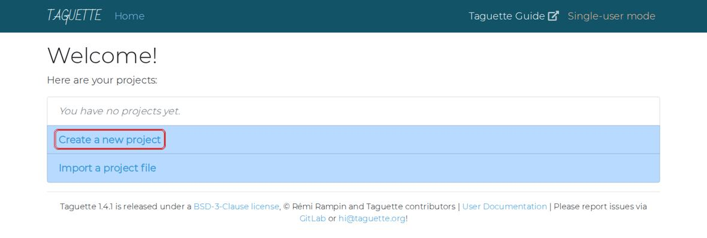
The Taguette welcome screen. Box: Create a new project. You should seeA page that says Welcome! with two blue choices.
Why this matters. The black window is Taguette itself. Do not close it while you work. The browser only shows the screen.
If your screen looks differentIf the browser says the page cannot be reached, the black window was closed. Open Taguette again. Do not type the address yourself: Taguette needs a secret code in the address, which it adds automatically.
Click Create a new project
- Click Create a new project (red box above).
You should seeA page titled New project with two boxes: Name and Description.
Type the project name and description, then click Create
- In box 1 (Name), type:
Work and Graduate Studies - In box 2 (Description), type a short note about the project. You can copy the one below.
- Click the blue Create button (box 3).
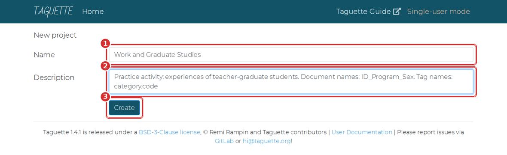
The New project page. 1 Name. 2 Description. 3 Create. DescriptionPractice activity: experiences of teacher-graduate students. Document names: ID_Program_Sex. Tag names: category.codeYou should seeYour project page opens.
- In box 1 (Name), type:
Learn the three tabs
- Look at the left side. There are three tabs: Project info, Documents and Highlights.
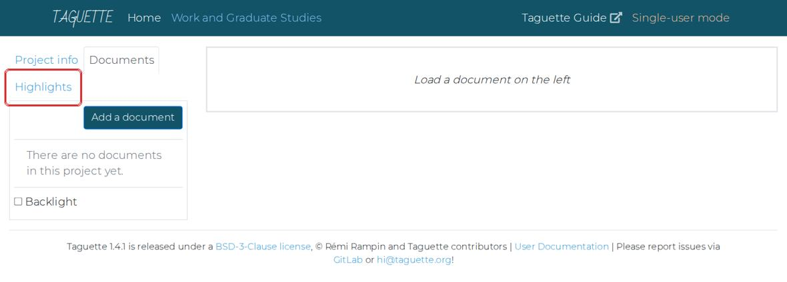
A new, empty project. The Highlights tab (box) is where tags live. You should seeAn empty project: no documents yet.
Why this matters. Documents holds your transcripts. Highlights holds your tags and coded passages. Project info is where you export and back up.
Part 4 about 15 minutes
Create the tags
You will type the 11 tags from the codebook. Creating them first means you choose from a list while coding, instead of inventing names.
Open the Highlights tab
- Click Highlights on the left (the boxed tab in the last picture).
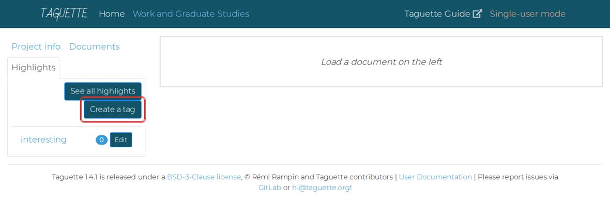
The Highlights tab. Box: Create a tag. Taguette starts with one tag called interesting. You should seeOne tag called interesting, and the buttons See all highlights and Create a tag.
Create your first tag
- Click Create a tag.
- In box 1, type the tag name:
chal.time - In box 2, type its meaning. Copy it from the table in the next step.
- Click Save & Close (box 3).
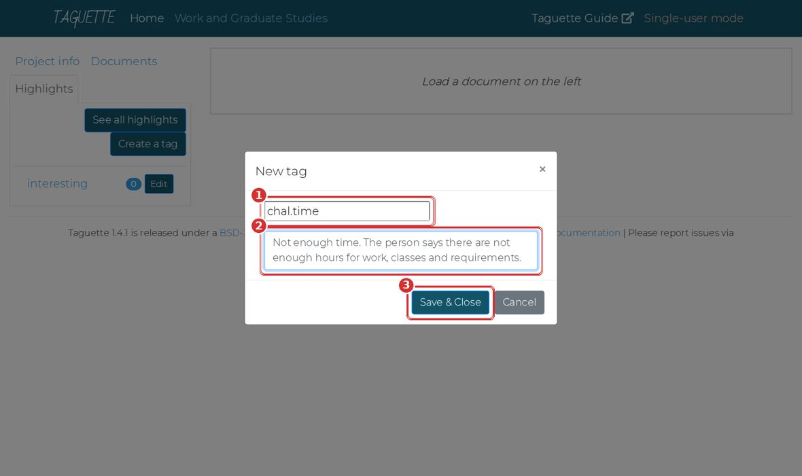
The New tag window. 1 Tag name. 2 Meaning. 3 Save & Close. You should seeThe window closes and chal.time appears in the list.
If your screen looks differentType the tag name in small letters, with one full stop and no spaces.
Chal. Timeis wrong;chal.timeis right.Create the other 10 tags
- Repeat Step 9 for every tag below. Use the Copy buttons, then paste with Ctrl+V.
After creating all tags. They are listed in alphabetical order. Each tag shows a count (now 0) and an Edit button. chal.timechal.timeMeaning: Not enough time. The person says there are not enough hours for work, classes and requirements.
chal.fatiguechal.fatigueMeaning: Tiredness. The person describes physical or mental exhaustion, sleepiness, or getting sick.
chal.financechal.financeMeaning: Money problems. The person mentions tuition, fees, books, loans, or other costs.
chal.familychal.familyMeaning: Family duties. The person has less time for family, or family responsibilities compete with studies.
sup.familysup.familyMeaning: Help from family. A family member helps, understands, or encourages the person.
sup.peerssup.peersMeaning: Help from classmates or co-teachers. Classmates, co-teachers or fellow students help or support the person.
sup.workplacesup.workplaceMeaning: Help from the school. The principal or school adjusts schedules, gives permission, or allows leave.
cope.planningcope.planningMeaning: Planning and scheduling. The person uses schedules, planners, calendars, deadlines, or small goals.
cope.restcope.restMeaning: Rest and recharge. The person rests, sleeps, takes breaks, naps, or does hobbies.
sug.flexibilitysug.flexibilityMeaning: Flexible classes. The person suggests online, hybrid, weekend, or more flexible class schedules.
sug.assistancesug.assistanceMeaning: Financial help or study leave. The person suggests scholarships, financial support, or study leave.
You should see12 tags in the list: your 11, plus interesting. Each shows the number 0.
Delete the tag called interesting
- Click the Edit button beside interesting.
- In the window that opens, click the red Delete tag button.
- If the browser asks Are you sure?, click OK.
You should seeExactly 11 tags remain.
Why this matters. It is not part of the codebook. If you leave it, someone may use it by accident, and it will appear in your exports.
Part 5 about 15 minutes
Import the transcripts
Importing copies each transcript into Taguette. Your original files are not changed.
When you import, you must type the document name yourself, exactly like the file name but without .txt. If you leave the Name box empty, Taguette names the document S01_Masters_Female.txt. In Excel, the Sex column would then say Female.txt, and your counts would be wrong.
Open the Add a document window
- Click the Documents tab.
- Click the blue Add a document button.
You should seeA window titled Add a document.
Choose the file
- Click Choose File (box 2 in the picture below).
- A window opens. Click Desktop on the left, then open Taguette-Activity.
- Click S01_Masters_Female.txt, then click Open.
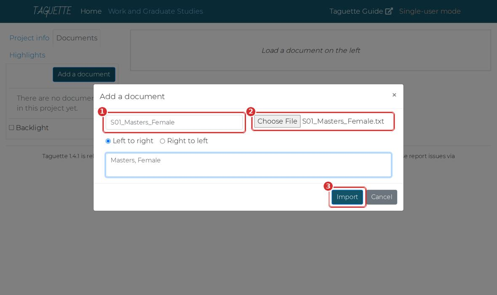
The Add a document window. 1 Name (type it). 2 Choose File. 3 Import. You should seeThe file name appears beside Choose File.
Type the name, then click Import
- Click in box 1 and type:
S01_Masters_Female(no .txt). - In the large box below, you may type
Masters, Female. This is optional. - Click Import (box 3). Wait a few seconds.
You should seeThe window closes. S01_Masters_Female appears in the list on the left.
If your screen looks differentIf an error appears, check that the black Taguette window is still open. Then try again.
- Click in box 1 and type:
Import the other five
- Repeat Steps 12 to 14 for S02 to S06. Type each name carefully.
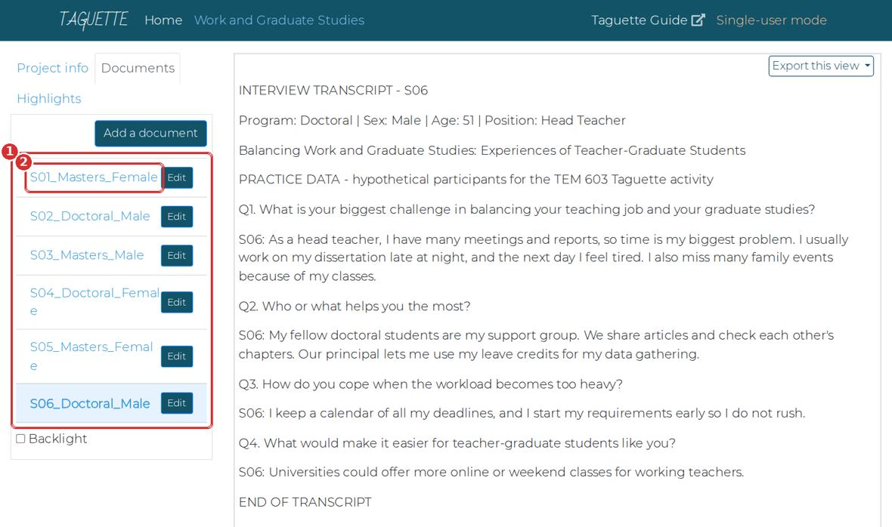
All six documents imported. The last one you imported opens on the right. File to choose Name to type S01_Masters_Female.txt S01_Masters_FemaleS02_Doctoral_Male.txt S02_Doctoral_MaleS03_Masters_Male.txt S03_Masters_MaleS04_Doctoral_Female.txt S04_Doctoral_FemaleS05_Masters_Female.txt S05_Masters_FemaleS06_Doctoral_Male.txt S06_Doctoral_MaleYou should seeSix documents in the list, from S01 to S06.
Part 6 about 35 minutes
Code the transcripts
Coding means selecting a statement and attaching a tag to it. You will repeat four actions: select, click, tick, save.
Open the first transcript and read it
- Click S01_Masters_Female in the list.
- Read the whole transcript once before you highlight anything.
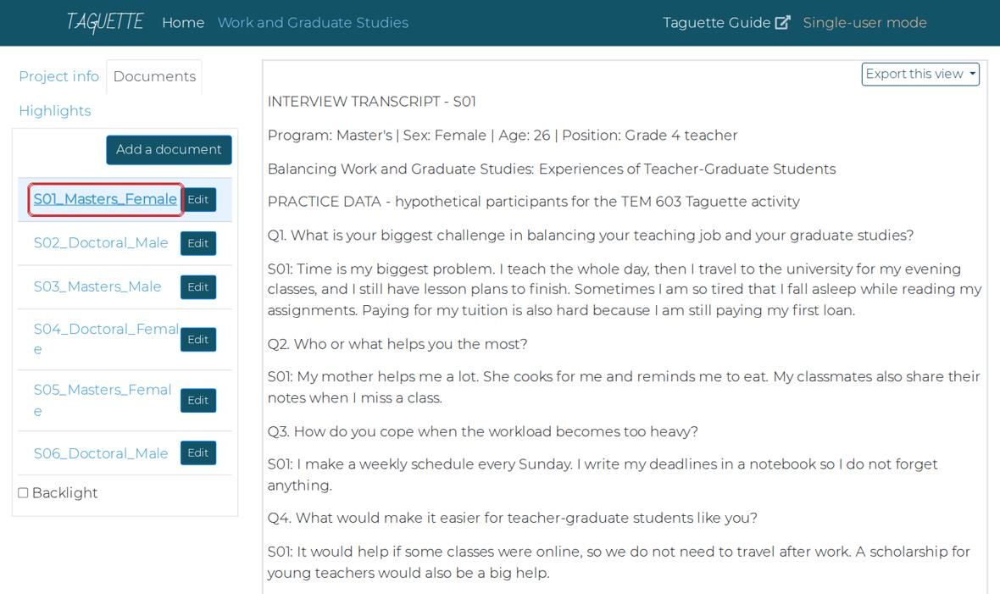
S01 opened. The transcript appears on the right. Why this matters. Reading first helps you code consistently. If you start tagging from the first line, you tend to tag the first transcript more heavily than the last.
Select the first statement
- Find this sentence in the Q1 answer: Time is my biggest problem.
- Put the mouse just before Time. Hold the left button down, drag to the full stop after problem, and let go.
- A small button new highlight appears under your selection (box).
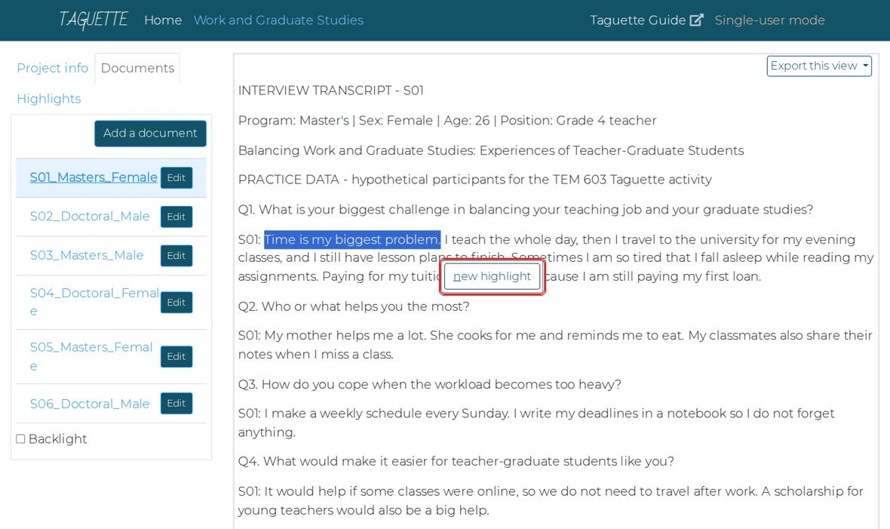
The selected sentence turns blue. The new highlight button appears below it. If your screen looks differentNo button? You probably clicked instead of dragging. Try again, holding the mouse button down while you move. Tip: after selecting, you can also press the N key.
Click new highlight, tick the tag, save
- Click new highlight.
- In the window titled Highlight, tick chal.time (box 1).
- Click Save & Close (box 2).
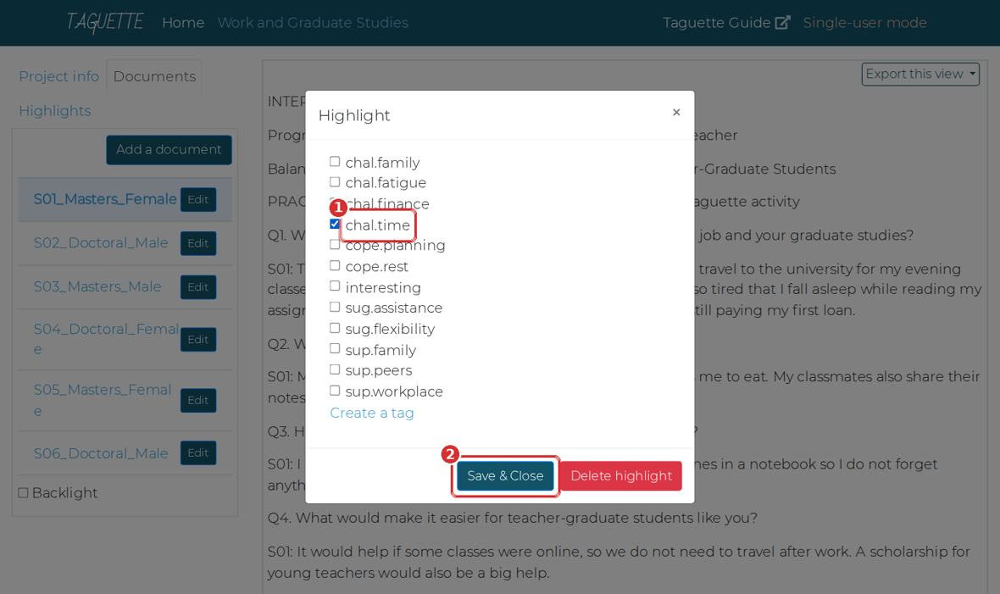
The Highlight window lists all your tags. 1 Tick the right tag. 2 Save & Close. 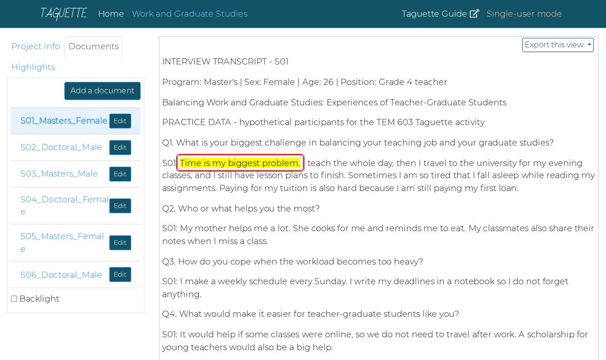
The statement is now yellow. That yellow text is a highlight. You should seeThe sentence turns yellow. You have coded your first statement.
Code the rest of S01
- Read each answer and look for statements that match a tag.
- For each one: select it, click new highlight, tick one tag, Save & Close.
- Select only the statement, usually one sentence, not the whole answer.
S01 has 8 statements to code in total, including the one you already did. The table below tells you how many to look for in each transcript, so you know when you are done.
Participant Statements to code Per question S01 8 Q1: 3, Q2: 2, Q3: 1, Q4: 2 S02 6 Q1: 2, Q2: 2, Q3: 1, Q4: 1 S03 8 Q1: 3, Q2: 2, Q3: 1, Q4: 2 S04 9 Q1: 4, Q2: 1, Q3: 2, Q4: 2 S05 7 Q1: 3, Q2: 2, Q3: 1, Q4: 1 S06 7 Q1: 3, Q2: 2, Q3: 1, Q4: 1 Why this matters. Selecting one sentence keeps each highlight about one idea. A whole answer can contain three different ideas.
Code S02 to S06
- Click each transcript in turn and repeat the same actions.
- Use the codebook in Part 1 when you are unsure.
You should seeYellow statements in all six transcripts. 45 highlights in total.
Check your counts
- Click the Highlights tab.
- Each tag shows a number beside it. Compare with the table.
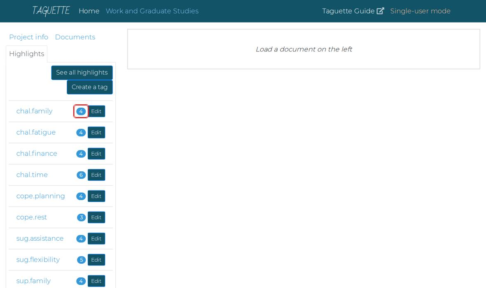
When coding is finished, each tag shows how many statements carry it (box). Tag Expected count chal.family4 chal.fatigue4 chal.finance4 chal.time6 cope.planning4 cope.rest3 sug.assistance4 sug.flexibility5 sup.family4 sup.peers4 sup.workplace3 Total 45 Why this matters. Your numbers may differ by one or two. That is normal: two people rarely code exactly the same. A big difference means you skipped a transcript or used the wrong tag.
If your screen looks differentTo fix a highlight, click on the yellow text. The same Highlight window opens: change the tick, or click the red Delete highlight button.
See every statement under one tag
- Click a tag name, for example chal.finance.
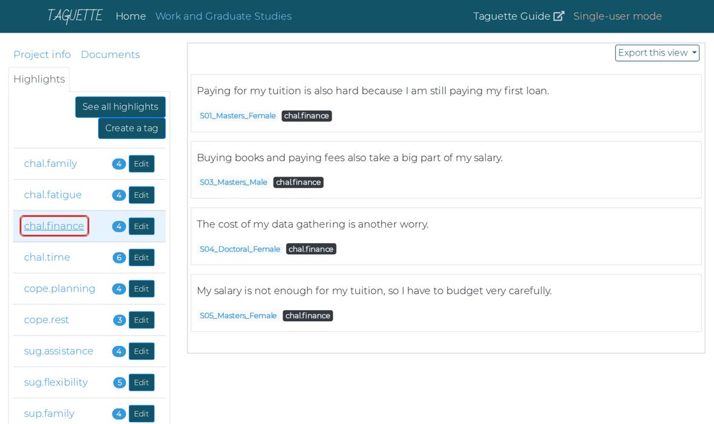
Clicking chal.finance shows every statement with that tag, from all transcripts, with the participant name under each. You should seeFour statements about money, from four different people, on one screen.
Why this matters. This is the main reason to use Taguette: finding all similar statements in one click, instead of re-reading every transcript.
Find statements you have not coded
- Open any transcript in the Documents tab.
- Tick Backlight (bottom left, under the document list).
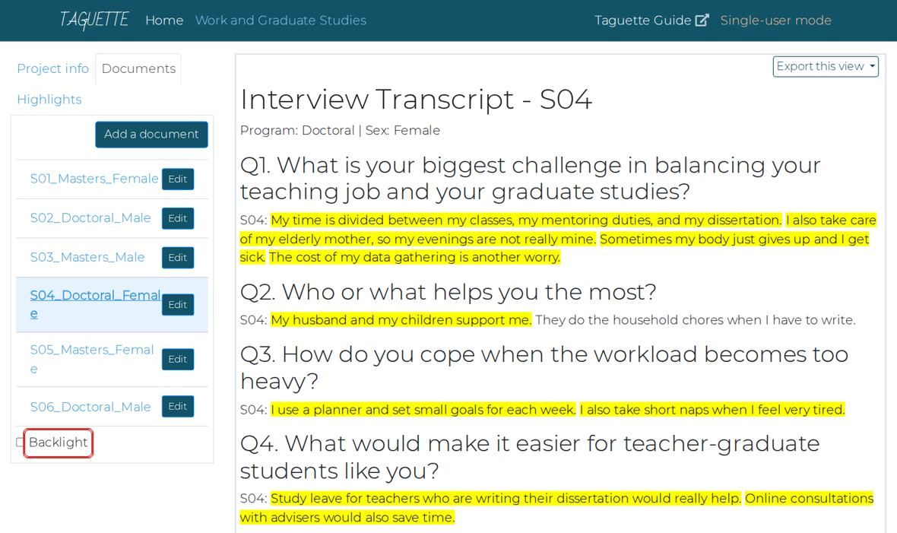
With Backlight on, uncoded text turns grey and only your highlights stand out. You should seeYour highlights stay bright. Everything else turns grey, so missed statements are easy to spot.
Part 7 about 10 minutes
Export your work
Taguette cannot count or make tables. You export the coded statements to Excel for that.
Open See all highlights
- Click the Highlights tab.
- Click See all highlights.
You should seeA long list of all 45 coded statements.
Export to Excel
- Click Export this view (top right).
- Click Excel (box).
- If your browser asks where to save, choose your Taguette-Activity folder. Otherwise the file goes to Downloads: move it into your folder.
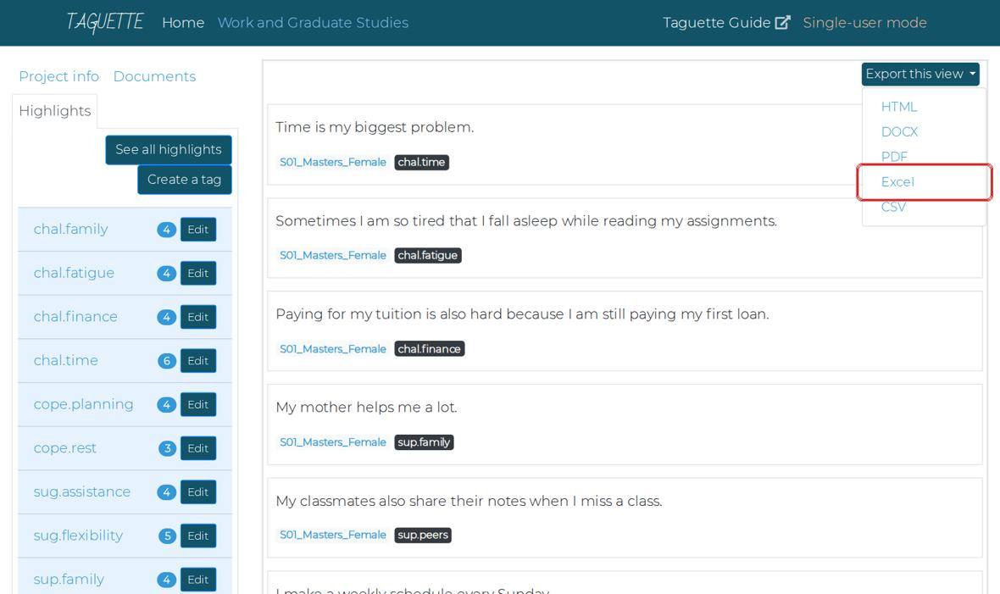
Export this view, then Excel. You should seeAn Excel file in your folder. Its name begins with highlights.
Back up the whole project
- Click the Project info tab.
- Click Export project (box). Save the file in your folder.
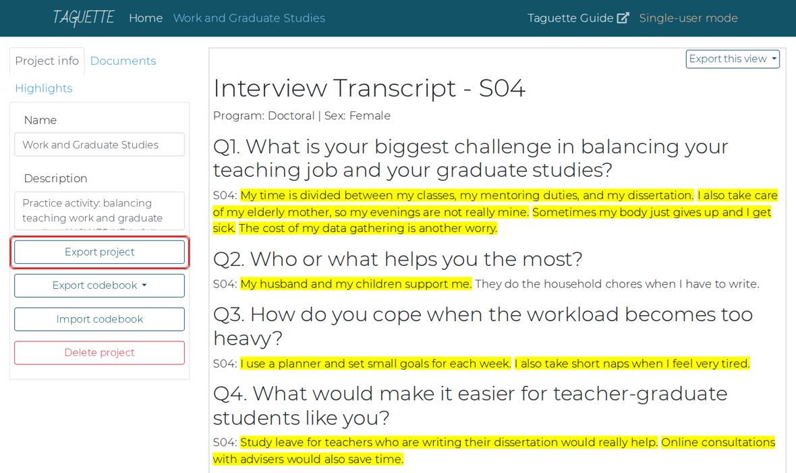
Project info: Export project saves your whole project in one file. You should seeA file ending in .sqlite3 in your folder. This file is also what you submit.
Why this matters. This one file holds your documents, tags and coding. You can open it again on any computer: on the Taguette welcome page, choose Import a project file.
Close Taguette properly
- Close the browser tab first.
- Then close the black Taguette window.
Why this matters. Closing only the browser tab leaves Taguette running in the background.
You can still do Parts 8 to 10. Download the ready-made export and continue with it.
Part 8 about 20 minutes
Prepare the data in Excel
You will split the document name and the tag into separate columns. This is called delimiting: cutting text wherever a chosen character appears.
Open the exported file and save a copy
- Double-click the exported Excel file in your folder.
- If a yellow bar says Enable Editing, click it.
- Click File, then Save As. Choose your folder, name it
Activity-YourName, and choose the type Excel Workbook (*.xlsx). Click Save.
A B C D 1 id document tag content 2 1 S01_Masters_Female chal.time Time is my biggest problem. 3 2 S01_Masters_Female chal.fatigue Sometimes I am so tired… You should seeThe file is open with four columns: id, document, tag, content.
Make room for the split: insert two empty columns after document
- Right-click the letter C at the top of column C.
- Click Insert.
- Do it once more: right-click C again, click Insert.
Diagram, not a screenshot. Right-click the column letter C, then Insert. You should seeTwo empty columns, C and D. The tag column has moved to E.
Why this matters. Splitting B into three pieces needs two empty columns to its right. Without them, Excel would write over the tag column.
Select column B and open Text to Columns
- Click the letter B at the top. The whole column turns grey.
- Click the Data tab at the top of Excel.
- Click Text to Columns.
FileHomeInsertDataReviewSortFilterText to ColumnsRemove DuplicatesDiagram, not a screenshot. Data tab, then Text to Columns. You should seeA window called Convert Text to Columns Wizard – Step 1 of 3.
Step 1 of the wizard: choose Delimited
- Click Delimited.
- Click Next.
Convert Text to Columns Wizard - Step 1 of 3◉ Delimited - characters such as commas or tabs separate each field○ Fixed widthCancelNext >Diagram, not a screenshot. Why this matters. Delimited means: cut wherever a certain character appears. Our names are cut at the underscore.
Step 2 of the wizard: split at the underscore, then Finish
- Untick Tab.
- Tick Other.
- In the small box beside Other, type an underscore: Shift + - gives
_ - Look at the preview at the bottom: you should see three columns.
- Click Finish.
Convert Text to Columns Wizard - Step 2 of 3Delimiters☐ Tab ☐ Semicolon ☐ Comma ☐ Space☑ Other: _documentS01MastersFemaleS02DoctoralMaleCancel< BackFinishDiagram, not a screenshot. Other is ticked with an underscore; the preview shows three columns. You should seeColumn B now shows S01, column C Masters or Doctoral, column D Female or Male.
If your screen looks differentIf Excel asks There’s already data here. Do you want to replace it?, click Cancel. You did not insert two empty columns. Go back to Step 29.
Rename the three headings
- Click cell B1, type
Participant, press Enter. - Click C1, type
Program, press Enter. - Click D1, type
Sex, press Enter.
You should seeHeadings: id, Participant, Program, Sex, tag, content.
- Click cell B1, type
Check for the .txt problem
- Look down column D (Sex).
- If any cell says Female.txt or Male.txt, fix it: click the letter D, press Ctrl+H.
- In Find what, type
.txt. Leave Replace with empty. Click Replace All, then Close.
You should seeColumn D shows only Female and Male.
Why this matters. This happens when a document was imported with the Name box left empty (Part 5). If you leave it, Excel counts Female and Female.txt as two different groups.
Split the tag at the full stop
- Right-click the letter F and click Insert. (One empty column is enough: the tag splits into two.)
- Click the letter E (the tag column).
- Data tab, Text to Columns, Delimited, Next.
- Untick everything, tick Other, type a full stop
.in its box, click Finish. - Rename E1 to
Categoryand F1 toCode.
You should seeColumn E shows chal, sup, cope or sug. Column F shows time, family, peers, and so on.
Turn the data into a Table
- Click any cell with data, for example B2.
- Press Ctrl+T. A small window appears; make sure My table has headers is ticked. Click OK.
- Save the file: Ctrl+S.
Your first rows should now look like this:
id Participant Program Sex Category Code content 1 S01 Masters Female chal time Time is my biggest problem. 2 S01 Masters Female chal fatigue Sometimes I am so tired that I fall asleep… 3 S01 Masters Female chal finance Paying for my tuition is also hard because… 4 S01 Masters Female sup family My mother helps me a lot. 5 S01 Masters Female sup peers My classmates also share their notes when … You should seeColored stripes and small arrow buttons on the headings. 45 rows of data.
Why this matters. A Table keeps all your rows together, so the PivotTable in the next part picks up everything automatically.
Part 9 about 25 minutes
Make the PivotTables
A PivotTable counts rows for you. You choose what to group by, and Excel builds the table in a second.
Insert a PivotTable, and tick the Data Model box
- Click any cell inside your Table.
- Click the Insert tab, then PivotTable. In newer Excel, click From Table/Range.
- Leave New Worksheet selected.
- Tick Add this data to the Data Model. Then click OK.
PivotTable from table or rangeTable/Range: Table1◉ New Worksheet ○ Existing Worksheet☑ Add this data to the Data ModelCancelOKDiagram, not a screenshot. The ticked box allows counting different people in Step 40. You should seeA new sheet with an empty PivotTable on the left and a panel called PivotTable Fields on the right.
If your screen looks differentNo Data Model box? You may be using Excel for Mac or Excel online. Continue anyway; Step 40 explains what to do.
Learn the PivotTable Fields panel
- At the top of the panel are your column names.
- At the bottom are four boxes: Filters, Columns, Rows, Values.
PivotTable Fields☐ id☐ Participant☐ Program☐ Sex☑ Category☑ Code☐ contentFiltersnarrows the whole tableColumnsgroups across the topRowsCategorygroups down the sideValuesCount of Codewhat is countedDiagram, not a screenshot. This is the setup for the next step. Why this matters. Every PivotTable is just a choice of what goes into these four boxes.
Count statements per category
- Point at Category, hold the mouse button, drag it into the Rows box, let go.
- Drag Code into the Values box.
Row Labels Count of Code chal 18 cope 7 sug 9 sup 11 Grand Total 45 You should seeFour categories with their counts. Challenges is the largest with 18.
Why this matters. The count is the number of coded statements, not the number of people. One person can say two challenges.
Count people instead of statements
- Drag Participant into Values, below Count of Code.
- Click the small arrow on Count of Participant, then Value Field Settings.
- Scroll the list and choose Distinct Count. Click OK.
Value Field SettingsSummarize value field bySumCountAverageMaxMinDistinct CountCancelOKDiagram, not a screenshot. Distinct Count is at the bottom of the list. Row Labels Count of Code Distinct Count of Participant chal 18 6 cope 7 6 sug 9 6 sup 11 6 Grand Total 45 6 You should seeEvery category shows 6 people: all six participants said something in every category.
Why this matters. This is the difference between how much was said (18 challenge statements) and how many people said it (6). In research writing, report the people first.
If your screen looks differentIf Distinct Count is missing, the Data Model box was not ticked in Step 37. Make the PivotTable again and tick it. On Mac or Excel online, skip this step: in this practice data each person has each code at most once, so at code level, Count of Code already equals the number of people.
Open each category into its codes
- Remove Distinct Count of Participant: drag it out of the Values box back to the list.
- Drag Code into the Rows box, below Category.
Row Labels Count of Code chal 18 family 4 fatigue 4 finance 4 time 6 cope 7 planning 4 rest 3 sug 9 assistance 4 flexibility 5 sup 11 family 4 peers 4 workplace 3 Grand Total 45 You should seeEach category with its codes listed under it. time has 6: every participant said they lack time.
Why this matters. Click the small minus sign beside a category to hide its codes, and the plus sign to show them again.
Compare Master’s and Doctoral students
- Drag Program into the Columns box.
Row Labels Doctoral Masters chal 9 9 family 3 1 fatigue 2 2 finance 1 3 time 3 3 cope 4 3 planning 3 1 rest 1 2 sug 4 5 assistance 1 3 flexibility 3 2 sup 5 6 family 2 2 peers 1 3 workplace 2 1 You should seeTwo columns of numbers, one per program. Excel puts them in alphabetical order: Doctoral first, then Masters.
Why this matters. Look at chal first: 9 and 9, no difference. Now look inside it: finance is Doctoral 1, Masters 3, but family is Doctoral 3, Masters 1. The difference was hidden inside the category. That is why you opened the codes in the last step.
Filter by sex
- Drag Sex into the Filters box.
- Above the PivotTable, click the small arrow beside (All). Choose Female, click OK.
- Look at the numbers, then set it back to (All).
You should seeThe table shows only the three female participants, then all six again.
See the actual statements behind a number
- Find the row finance under the Masters column. It shows 3.
- Double-click that 3.
You should seeExcel opens a new sheet with the 3 statements behind that number, with their content.
Why this matters. Every number in a PivotTable is made of real statements. Use this to find quotes for your report. Delete the extra sheet afterwards: right-click its tab, then Delete.
Optional: make a chart
- Click inside the PivotTable.
- Click the PivotTable Analyze tab (or Analyze), then PivotChart.
- Choose Clustered Column, click OK.
You should seeA bar chart that changes whenever you change the PivotTable.
Check your PivotTable with the one on this page
- Use the practice PivotTable below. Choose the same Rows, Columns and Values you used in Excel.
- Your numbers should match. If they differ by one or two, it is your coding, which is normal.
Click any number to see the statements behind it, like double-clicking in Excel.
Part 10 about 15 minutes
Interpret the results
Numbers are not findings. A finding is a sentence that explains what the numbers mean, honestly.
Answer five questions from your PivotTables
- Write your answers on paper or in a new Excel sheet.
- Which challenge did every participant mention?
- Which challenge was mentioned more by Master’s students?
- Which challenge was mentioned more by Doctoral students?
- Which support did Master’s students rely on more?
- Which coping strategy did Doctoral students use more?
Show the answers
- Lack of time (chal.time): 6 of 6.
- Money problems (finance): 3 of 3 Master’s, 1 of 3 Doctoral.
- Family duties (family): 3 of 3 Doctoral, 1 of 3 Master’s.
- Classmates or co-teachers (peers): 3 of 3 Master’s, 1 of 3 Doctoral.
- Planning and scheduling: 3 of 3 Doctoral, 1 of 3 Master’s.
Write a short interpretation
- Write three to five sentences about what you found. Use the starter sentences below if you like.
Starter sentencesAll six participants …
Among the Master’s students, … while among the Doctoral students, …
This may be because …
However, with only three participants in each group, …Why this matters. Two rules. Write the people, not percentages: say three of the three, not 100%, because 100% of three people sounds like a survey. Do not generalize: six hypothetical participants describe only themselves.
Compare with a model answer
- Read yours first, then open the model.
Show a model interpretation
All six participants described a lack of time as their main challenge in balancing teaching and graduate studies. The other challenges differed by program. All three Master’s students mentioned money problems such as tuition and fees, and they relied more on classmates and co-teachers for support. All three Doctoral students mentioned family duties, and they coped mainly through careful planning. This may reflect their stage of life: the Master’s students were younger and earlier in their careers, while the Doctoral students were older with more family responsibilities. However, with only three participants in each group, these patterns describe these six teachers only and cannot be generalized.
Part 11 about 5 minutes
Submit your work
Check everything before you send it.
| Submit this | File |
|---|---|
| Your Taguette project | The .sqlite3 file from Step 26 |
| Your Excel workbook | Activity-YourName.xlsx with the split columns and at least one PivotTable |
| Your interpretation | Three to five sentences, in the workbook or a short document |
How it will be checked
| What | Points | Full points when… |
|---|---|---|
| Project and tags | 15 | Project created; 11 tags with exact names; interesting deleted |
| Import and naming | 15 | Six documents named exactly Participant_Program_Sex, without .txt |
| Coding | 25 | About 45 highlights; each one a statement, not a whole answer; tags fit the codebook |
| Delimiting in Excel | 15 | Participant, Program, Sex, Category and Code in separate columns |
| PivotTables | 20 | Category and Code counts; Program comparison; Distinct Count or an explanation why not |
| Interpretation | 10 | Clear, honest, uses numbers of people, does not generalize |
| Total | 100 |
Part 12
Help and answer keys
Problems people actually run into, and the full coding key.
| Problem | What to do |
|---|---|
| The browser shows secret token or cannot reach the page | The black Taguette window was closed, or you typed the address. Close everything and open Taguette from the Start menu. |
| Taguette shows an error when importing | Check that the file ends in .txt and that the black window is open. Try again. |
| A document has the wrong name | Documents tab, click Edit beside it, correct the name, save. |
| I tagged a statement with the wrong tag | Click the yellow text, untick the wrong tag, tick the right one, Save & Close. |
| No new highlight button appears | Drag to select (do not just click). Or select, then press the N key. |
| Excel asks to replace data during Text to Columns | Cancel. Insert enough empty columns to the right first (Step 29). |
| Sex column shows Female.txt | Select the column, Ctrl+H, find .txt, replace with nothing, Replace All (Step 34). |
| No Distinct Count in Value Field Settings | The Data Model box was not ticked. Make the PivotTable again (Step 37). |
| The PivotTable does not show new rows | Click inside it, then PivotTable Analyze, Refresh. |
Show the full coding key (45 statements)
| Participant | Question | Statement to highlight | Tag |
|---|---|---|---|
| S01 | Q1 | Time is my biggest problem. | chal.time |
| S01 | Q1 | Sometimes I am so tired that I fall asleep while reading my assignments. | chal.fatigue |
| S01 | Q1 | Paying for my tuition is also hard because I am still paying my first loan. | chal.finance |
| S01 | Q2 | My mother helps me a lot. | sup.family |
| S01 | Q2 | My classmates also share their notes when I miss a class. | sup.peers |
| S01 | Q3 | I make a weekly schedule every Sunday. | cope.planning |
| S01 | Q4 | It would help if some classes were online, so we do not need to travel after work. | sug.flexibility |
| S01 | Q4 | A scholarship for young teachers would also be a big help. | sug.assistance |
| S02 | Q1 | Between teaching, checking papers, and writing my dissertation, the hours are never enough. | chal.time |
| S02 | Q1 | I also feel guilty because I spend less time with my two children. | chal.family |
| S02 | Q2 | My wife understands my situation and takes care of the children when I have classes. | sup.family |
| S02 | Q2 | Our principal also allows me to leave early on Saturdays. | sup.workplace |
| S02 | Q3 | I plan my week carefully. | cope.planning |
| S02 | Q4 | A more flexible class schedule would help | sug.flexibility |
| S03 | Q1 | There is never enough time. | chal.time |
| S03 | Q1 | By Friday I am already exhausted. | chal.fatigue |
| S03 | Q1 | Buying books and paying fees also take a big part of my salary. | chal.finance |
| S03 | Q2 | My co-teachers help me by covering some of my duties when I have exams. | sup.peers |
| S03 | Q2 | Our school head also adjusted my schedule this semester. | sup.workplace |
| S03 | Q3 | I make sure I sleep at least six hours, even when there are deadlines. | cope.rest |
| S03 | Q4 | Hybrid classes would save us travel time. | sug.flexibility |
| S03 | Q4 | The division could also offer financial support for teachers taking graduate studies. | sug.assistance |
| S04 | Q1 | My time is divided between my classes, my mentoring duties, and my dissertation. | chal.time |
| S04 | Q1 | I also take care of my elderly mother, so my evenings are not really mine. | chal.family |
| S04 | Q1 | Sometimes my body just gives up and I get sick. | chal.fatigue |
| S04 | Q1 | The cost of my data gathering is another worry. | chal.finance |
| S04 | Q2 | My husband and my children support me. | sup.family |
| S04 | Q3 | I use a planner and set small goals for each week. | cope.planning |
| S04 | Q3 | I also take short naps when I feel very tired. | cope.rest |
| S04 | Q4 | Study leave for teachers who are writing their dissertation would really help. | sug.assistance |
| S04 | Q4 | Online consultations with advisers would also save time. | sug.flexibility |
| S05 | Q1 | Time management is my biggest challenge | chal.time |
| S05 | Q1 | My salary is not enough for my tuition, so I have to budget very carefully. | chal.finance |
| S05 | Q1 | I also help my parents take care of my younger siblings. | chal.family |
| S05 | Q2 | My parents encourage me to finish my degree. | sup.family |
| S05 | Q2 | My classmates and I have a group chat where we remind each other about deadlines. | sup.peers |
| S05 | Q3 | When I feel overwhelmed, I take a break and watch a movie. | cope.rest |
| S05 | Q4 | I hope there will be more scholarships for new teachers who want to continue studying. | sug.assistance |
| S06 | Q1 | time is my biggest problem | chal.time |
| S06 | Q1 | I usually work on my dissertation late at night, and the next day I feel tired. | chal.fatigue |
| S06 | Q1 | I also miss many family events because of my classes. | chal.family |
| S06 | Q2 | My fellow doctoral students are my support group. | sup.peers |
| S06 | Q2 | Our principal lets me use my leave credits for my data gathering. | sup.workplace |
| S06 | Q3 | I keep a calendar of all my deadlines, and I start my requirements early so I do not rush. | cope.planning |
| S06 | Q4 | Universities could offer more online or weekend classes for working teachers. | sug.flexibility |
TEM 603 Data Management and Analysis. Practice data: all participants and answers are hypothetical, written for this activity. Screenshots are from Taguette 1.4.1.